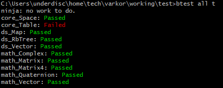
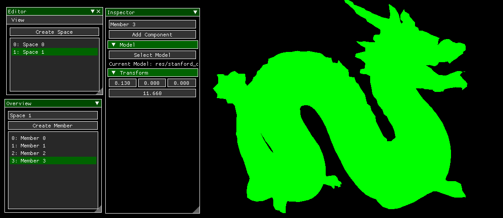

A Needed Update
It has been 4 months since my last post. I should have written one a long time ago but doing so has been a challenge. It's not difficult to write a post, but my personal confidence has made it difficult. I keep saying to myself, "I'll post once I get this done" time after time thinking that what I have done is not worthy of being talked about or isn't enough. Though very few will read these, they still involve me exposing my work and that makes it hard to build up the courage to write them.
So for this blog post, I am just going to provide a brief overview of everything I did in the time since the last one. There are over 100 commits since then.
New Stuff
I streamlined the process used for building and running Varkor and the Varkor unit tests. I first created this system right after my previous post, but I have been iterating on it and improving it since then.
The basic structure is simple. There are two batch files that handle the entire process of building and running all of the binaries in the Varkor project: bvarkor.bat and btest.bat. bvarkor.bat is the simpler of the two.
REM Build Varkor.
pushd %buildDir%
%generator% varkor
popd
set buildFailed=1
if errorlevel %buildFailed% (
exit /b 1
)
REM Run Varkor if requested.
if "%1" == "r" (
varkor.exe
)
It's pretty straight-forward, but the special thing to mention here are the buildDir and generator environment variables. There is another file called buildSpecs.bat that takes the responsibility of defining those variables and it's ignored by git. This makes it possible to swap out the generator and build directory without ever affecting the state of the repository. Changing the build directory in this file would be analogous to changing from release to debug in visual studio.
btest.bat is much more extensive than bvarkor.bat. It is responsible for building, running, and testing unit tests. It also shows differences when a unit test fails. The last task I accomplished before taking a small break from Varkor to write this and do some website general work was making it possible to run all tests with a single command to check if they are passing or failing. I used to go through tests one by one, but now it's just a matter of running btest all t and all tests are performed.

I created a basic implementation for Varkor's core. The entire core of the engine is called the world and the world can contain spaces. A space is just a partition of the world that has the ability to contain members and these members can contain components. Essentially, in typical game engine lingo, spaces are equivalent to scenes and members are equivalent to objects.

This technique allows for an easy way to have a UI. Unlike Unity where a giant canvas exists in the scene, there can be one space for the game world and another for the UI. The world is not limited to two spaces either. There can be any number of spaces, each with their own members and component tables. I was first introduced to this idea by the Zero Engine and it has been dissapointing to not see other engine's use it.
The main work I have been pursuing with the core is the creation of an ecs. The idea is store components of the same type next to each other in a single array. This makes iteration over a single component efficient because it avoids cache misses. My current implementation tries to do this, but deleting components still creates gaps in the component tables. I also don't have the ability to align component types to make iterating over a set of component types fast. Here's a small sample of what using this ecs currently looks like. This snippet is from the renderer that I am currently working on.
void RenderModels(const Core::Space& space, const Shader& shader)
{
// Visit all of the model components within the space.
Core::Table::Visitor<Comp::Model> visitor =
space.CreateTableVisitor<Comp::Model>();
while (!visitor.End())
{
// If the object whose model component is being visited has a transfrom
// component, we use transformation matrix it provides.
Comp::Transform* transform =
space.GetComponent<Comp::Transform>(visitor.CurrentOwner());
if (transform == nullptr)
{
Mat4 identity;
Math::Identity(&identity);
shader.SetMat4("uModel", identity.CData());
} else
{
shader.SetMat4("uModel", transform->GetMatrix().CData());
}
// We render the model referenced by the model component if the model has
// been added to the asset library.
const Comp::Model& modelComp = visitor.CurrentComponent();
const Gfx::Model* model = AssetLibrary::GetModel(modelComp.mAsset);
if (model != nullptr)
{
model->Draw(shader);
}
visitor.Next();
}
}
I implemented red-black trees and used that implementation to create the equivalent of std::map. This is a topic I feel like I should have had an assignment on in college, but never did. We implemented AVL trees instead. It's challenging to get all of the transformations right when implmenting red-black trees, but after doing it, I have gained a very good understanding of those transformations and why they are necessary. A lot of that came when I realized the assumptions that can and can't be made when a node is red or black. For example: if a node is red, it must be the case the its children and parents are black because there can't be two red nodes attached to each other. I don't want to dwell on this more because this is an extensively discussed topic, however, I do want to show off the output I created for my unit tests.
B: 408
| \B: 721
| | \B: 782
| | | \B: 872
| | | \R: 858
| | \B: 771
| \B: 536
| | \B: 577
| \B: 495
\B: 187
| \B: 300
| | \B: 394
| | \R: 370
| \B: 274
\B: 30
| \R: 168
| | \B: 171
| \B: 167
\B: 20
\R: 24
A lot of work was completed on the graphics front. I got the opportunity to review the tutorials provided on learnopengl.com and go through others that I have never read. I am now able to load models using assimp and I can perform basic lighting on the models. Now tackling a modular renderer is one of my current tasks. The current state of the core rendering code is in the snippet above where I talked about the core.
Other Small Stuff
- I learned what there is to know about move semantics. I am baffled I did not learn about it sooner.
- I wrote a small profiler that prints block times out to the console to get an understanding of how long certain operations take.
- I am constantly cleaning up the code to make it consistent and hopefully easy to follow.
It was quite a chunk of work. In the last four months, Varkor has gone from not being able to do much to having objects with custom models that can be moved around in a world of objects. Like previous posts, a lot of the work I accomplished has been glossed over and just downright ommitted from this post. This is not good because it makes me feel as though not much happened in the time since my last post when that's not actually the case. Going forward, it will be important for me to create these more often to hold myself accountable for the work I am doing and the work I want to do.
As always, thanks for reading.